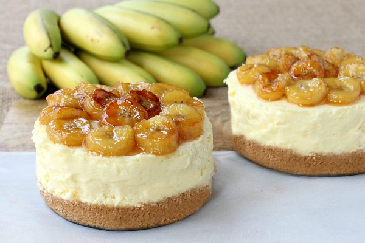

"Cheesecake"

No Bake Banana Rum Cheesecake
INGREDIENTS
Crust
- 1 1/2 cups graham cracker crumbs
- 5 tablespoons melted butter
- 2 tablespoons granulated white sugar
Filling
- Two 8- ounce packages cream cheese, softened
- 3/4 cup heavy cream
- 1/2 cup granulated white sugar
- 1/2 teaspoon vanilla extract
- 1/4 teaspoon banana extract
- 1 ounce (2 tablespoons) dark rum
Topping
- 4 tablespoons (1/2 stick) butter
- 1/4 cup brown sugar
- 2 ounces (1/4 cup) dark rum
- 2 large bananas, sliced into 1/4" thick slices
Steps
- In a medium bowl, combine the crust ingredients. Press this mixture into the bottom of your springform pan (either a 9-inch or 4 individual 4 1/2-inch pans) using a glass to press down firmly.
- In a large bowl, use an electric mixer to combine the filling ingredients; beat for 3 minutes, or until smooth.
- Scrape the filling evenly into the 4 springform pans, or scrape all of the filling into one 9-inch springform pan.
- Chill in the refrigerator for 4 hours or up to two days.
- Make the banana topping by adding 4 tablespoons of butter to a large skillet and heat over medium heat. Once the butter is melted, stir in the brown sugar. Carefully pour in the rum and cook for 3 to 4 minutes while stirring.
- Add in the sliced bananas and cook for 5 minutes, flipping the bananas over halfway through.
- Remove the cheesecake(s) from the springform pans by running a knife around the edges first and carefully loosening the spring on the pan.
- Spoon the banana topping over the cheesecake and serve.